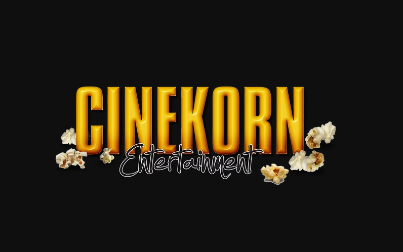
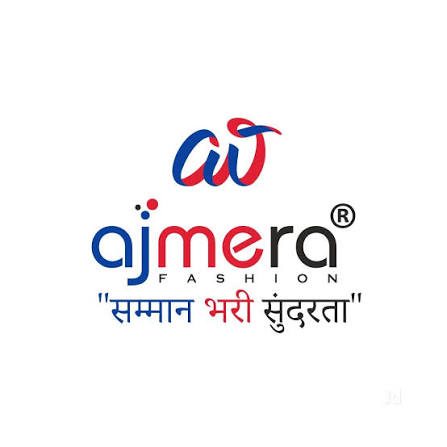
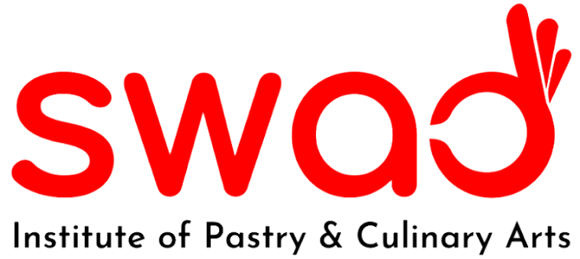
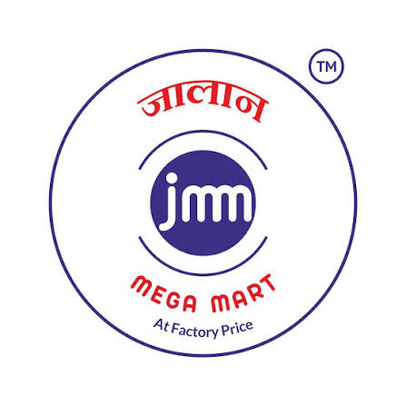

Scaling digital entertainment, multi-channel video distribution, and audience retention engines.
Currently managing multi-channel video distribution architectures, audience acquisition funnels, and executive brand positioning across 9 platforms with over 108M+ views.

Cinekorn Entertainment
Ajmera Fashion
Swad Cooking Institute
Jalan Mega MartLooking for a Creative Strategist or Content Systems Architect who can turn video content and digital platforms into compounded audience growth and revenue? Let's connect.